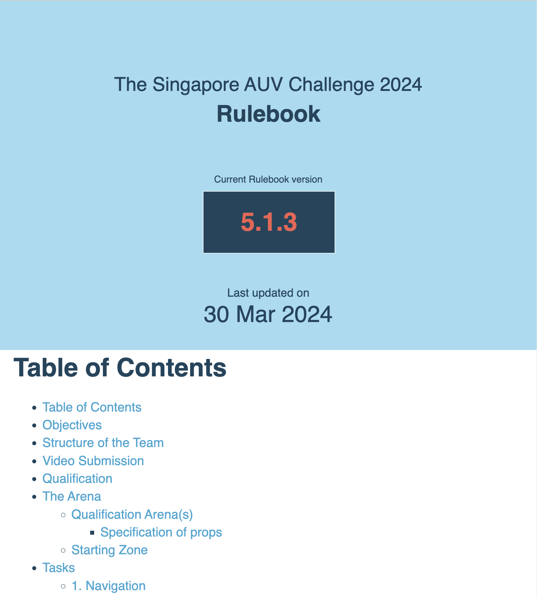
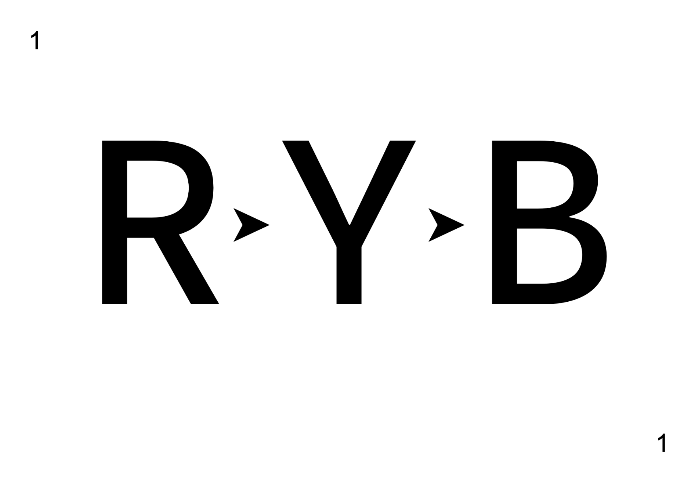

SAUVC 2024
WiFi: "SAUVC24", Password: "Sauvc@SP2024"

#sauvc2024
Game rules and regulations
#sauvc2024
Rulebook
- All game rules are written in the rulebook (v5.1.3).
- Please read the rulebook.
- https://sauvc.org/rulebook/

Rulebook v5.1.3
- Some changes since 2022
- Some changes since v4.3 (published in 2022)
Safety
- AUVs should not leak or pollute the pool.
- AUVs must have a brightly colored kill switch that turns off the vehicle.
### Safety !!
- No soldering in the hall
- No power tools in the hall
- No footware in the pool
- No electricity near the pool
- No running near the pool
### Game Sequence
1. Pre-qualification
2. Qualification Rounds
3. Practice Rounds
4. Final Rounds
### Pre-qualification
- Teams can test their AUVs in the Medium pool anytime after Day 1 (5 April, Friday), 1300h
- A **maximum of 2 people per team** may enter the Medium pool.
Pre-qualification
- Spare props are available for testing in the Medium pool.
- 1 drum, 1 pinger (45kHz)
- 15 minute Prop Slots.
- Contact Slot Master to get Prop Slots.
### Pre-qualification
- On Day 1 (5th April, Fri), any team can request for *Prop Slots*.
- From Day 2 (6th April, Sat), only teams that have attempted qualification can request for *Prop Slots*.
### Qualification Rounds
- AUVs have to pass a qualifying round before they can participate in the main arena.
- Only the top 15 qualified teams will advance to the Final round.
- *Qualification Slots* have been pre-allocated.
- https://sauvc.org/slots/
### Practice Rounds
- Teams that have **successfully completed** the qualifying round can request for *Practice Slots* in the main arena.
- **No tethers** at any time inside the main arena.
- Can calibrate of AUV sensors with tethers, at the edge of the pool, with the vehicle held **stationary**.
### Practice Rounds
- *Practice Slots* will be allocated first come first served.
- 15 minute *Practice Slots*.
- Contact *Slot Master* after qualification to request your *Practice Slots*.
### Final Rounds
- Finalists will be announced based on qualification results.
- Last team in qualification round will have the first *Final Round Slot*.
- 15 minute *Final Round Slot*.
- Bring AUV to pool side 5 minutes **before** your *Final Round Slot* starts.
### Final Round
- Any number of attempts within the 15 minute *Final Round Slot*.
- At the beginning of every attempt AUV starts from the start zone with 0 points.
- Attempt with the highest score will be considered for final scoring.
Tasks
- Navigation (Gate)
- Target Acquisition (Ball Drop)
- Target Reacquisition (Ball pickup)
- Communication & Localization (Flare)
Communication & Localization
- Updated task!
- 3 coloured flares (Red, Yello, Blue). No pingers!
- AUV has to knock the flares in the right order
- Order will be announced AFTER the AUV crosses the gate
- [+60 Points] for flares knocked in the right order

### Surfacing
- If the AUV surfaces any **any time** during the attempt, the current attempt comes to an **end**.
- **[5 Points]** bonus for ending (as opposed to aborting) an attempt.
### Penalties
- **[-2 Points]** points for touching the gate
- **[-5 Points]** **per hit** touching the bottom of the pool or wall
Automatic Abort
- AUV touches the bottom or walls for more than 10 seconds or 5 times will automatically abort the current attempt.
- AUV touches the Red Flare will automatically abort the current attempt.
- Divers will turn off the AUV (kill switch) and bring it back to the starting zone.
### Aborting
- Current attempt can be aborted, by indicating to the **Game Master**.
- Divers will turn off the AUV (kill switch) and bring it back to the starting zone.
### Diver Communication
- _Game Master_ will help you relay messages to the divers.
- Tell the _Game Master_ **clearly** if you want your AUV stopped and retrieved by divers.
### Important People
- **Game Master** - Game rules, Final rounds.
- **Slot Master** - Prop slots, Practice Round slots.
Bonus Round!! New!
- Top 5 finalist compete for a Bonus Prize on Day 3 (Monday, 8 April).
- Happening at TCOMS
### Bonus Round!!
- Competiting teams are required to provision a **DELAYED START** for their AUVs
- Bonus Round Briefing on Day 3 (Sunday, 7 April) at 5.00pm
- Other teams are able to attend to watch. Choose time slot at registration
- Schedule on website
## Announcements
- https://sauvc.org/slots/
- Whatsapp Group
### Medium Pool Testing
- **Any time** after Day 1 (5th April, Friday), 1300h.
- You have to return the indemnity form to us **before** you can get into any pools.
- **No footware** inside the pool!
### Special Announcements
- Innovation award walk-about will happen NOW!